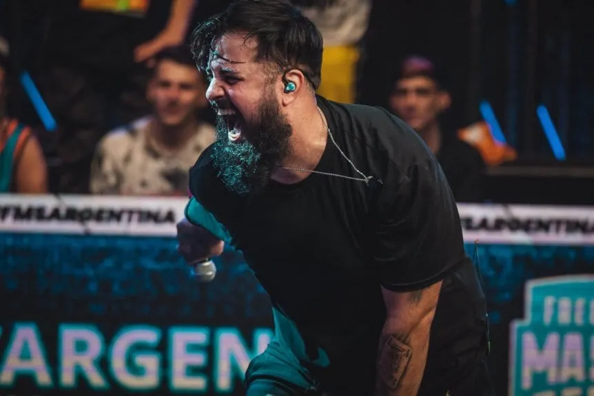

El famoso rapero argentino que fundó un equipo de esports
Tomó la decisión en horas y lo comunicó en su canal de Twitch, al mismo tiempo que el roster de CS:GO estaba haciendo su presentación.

PapoMC, reconocido freestyler, exitoso jugador de Póker y también streamer, tomó de golpe la determinación de armar su propia organización de esports y contratar a este roster de Counter, el mismo día que hicieron su presentación en la Qualy para la Closed del Americas RMR rumbo al Major de París, organizado por BLAST.
El equipo se llama BESTIA, en referencia al apodo que caracteriza a Papo y que hasta tiene como nombre en su cuenta de Instagram: La Bestia del Hardcore. Por el momento sólo incursionó en CSGO, de la mano de Luken, Mayern, Noktse, Deco y Luchov, con Pino como entrenador.
Alejandro Andrés Lococo tiene más de 10 años en la escena del freestyle argentino e internacional y se caracteriza por un estilo agresivo y crudo a la hora de las batallas. Luego de hacerse reconocido en este ambiente, en 2019 comenzó a competir de manera profesional en el Póker y también tuvo un enorme éxito, junto con la decisión de armar su canal de Twitch.